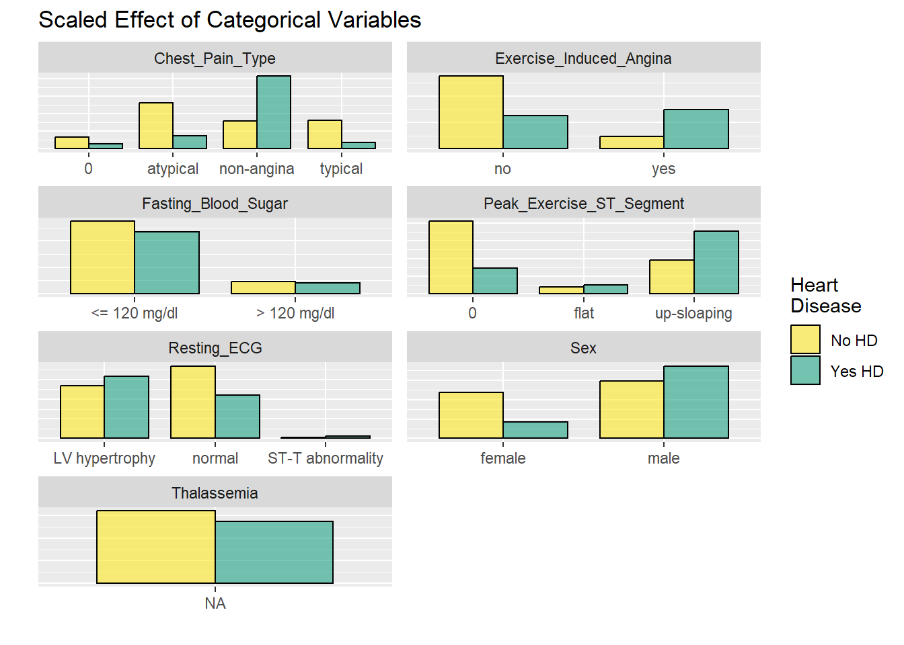
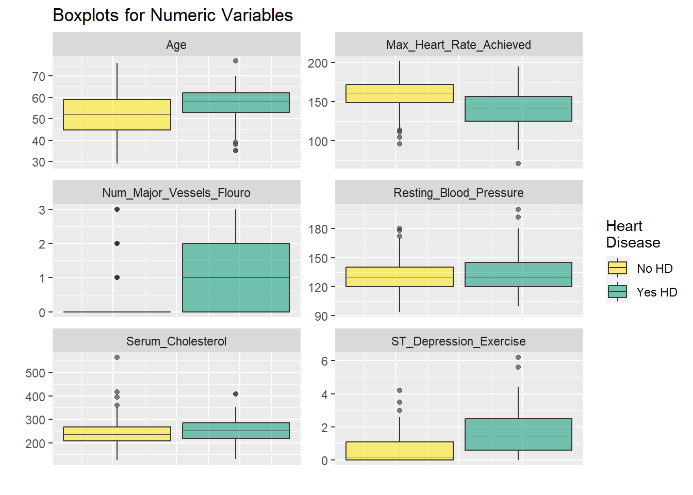
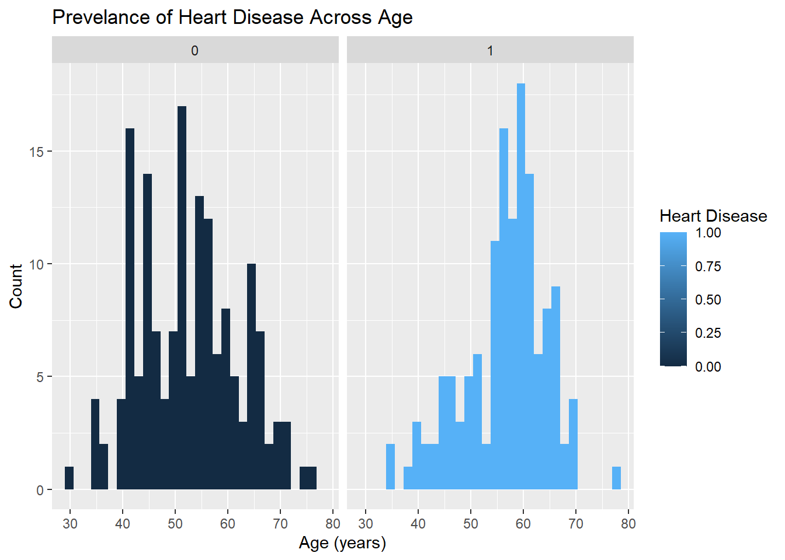
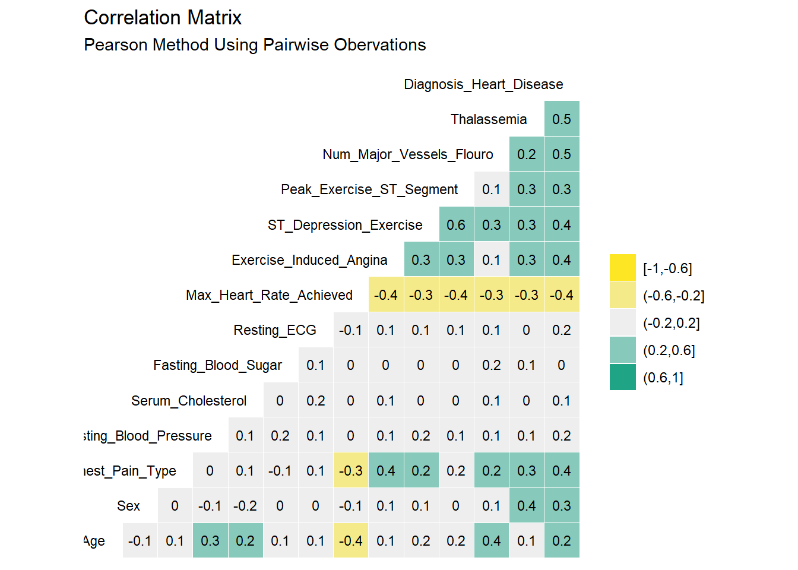
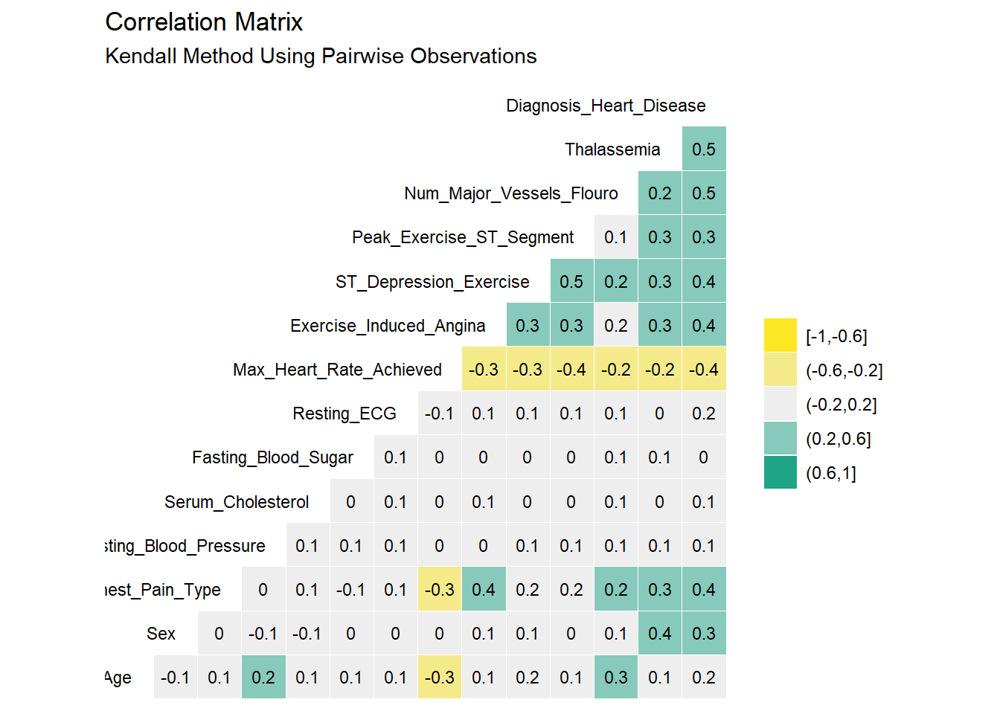
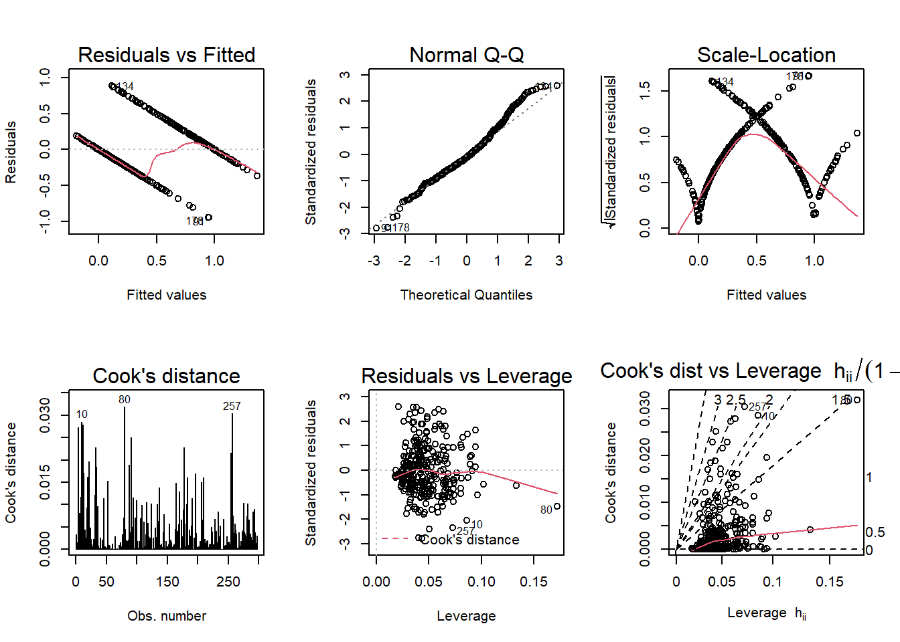
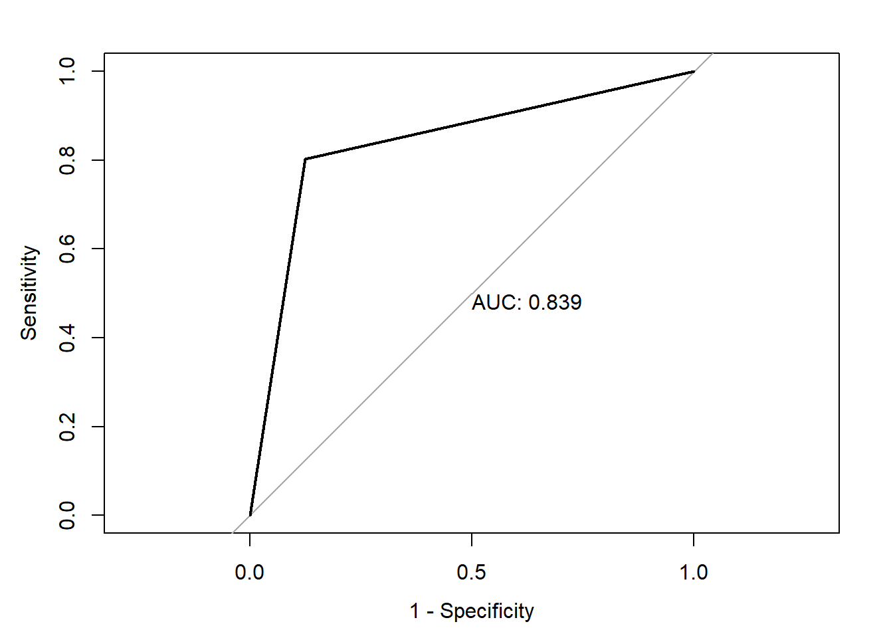
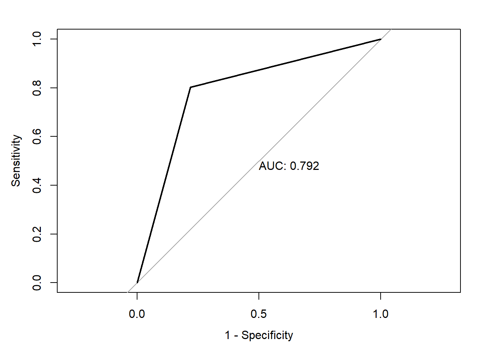

Final project
Heart Disease in the United States:
Heart disease is the leading cause of death for men, women, and people of most racial and ethnic groups in the United States.One person dies every 34 seconds in the United States from cardiovascular disease.About 697,000 people in the United States died from heart disease in 2020—that’s 1 in every 5 deaths.Heart disease cost the United States about $229 billion each year from 2017 to 2018.3 This includes the cost of health care services, medicines, and lost productivity due to death. Coronary heart disease is the most common type of heart disease, killing 382,820 people in 2020. About 20.1 million adults age 20 and older have CAD (about 7.2%).In 2020, about 2 in 10 deaths from CAD happen in adults less than 65 years old.Early Action Is Important for Heart Attack Know the warning signs and symptoms of a heart attack. In the United States, someone has a heart attack every 40 seconds.2 Every year, about 805,000 people in the United States have a heart attack.Of these, 605,000 are a first heart attack 200,000 happen to people who have already had a heart attack About 1 in 5 heart attacks are silent—the damage is done, but the person is not aware of it.
Research :
Examining the relationship between maximum heart rate one can achieve during excercise and likelihood of developing heart disease .
Using Multiple logistic regression confounding effects of age and gender.
Loading Required Libraries and Reading the Dataset
Code
library(kableExtra)Warning: package 'kableExtra' was built under R version 4.1.3Code
library(tidyverse)Warning: package 'tidyverse' was built under R version 4.1.3-- Attaching packages --------------------------------------- tidyverse 1.3.2 --
v ggplot2 3.4.0 v purrr 0.3.5
v tibble 3.1.8 v dplyr 1.0.10
v tidyr 1.2.1 v stringr 1.5.0
v readr 2.1.3 v forcats 0.5.2 Warning: package 'ggplot2' was built under R version 4.1.3Warning: package 'tibble' was built under R version 4.1.3Warning: package 'tidyr' was built under R version 4.1.3Warning: package 'readr' was built under R version 4.1.3Warning: package 'purrr' was built under R version 4.1.3Warning: package 'dplyr' was built under R version 4.1.3Warning: package 'stringr' was built under R version 4.1.3Warning: package 'forcats' was built under R version 4.1.3-- Conflicts ------------------------------------------ tidyverse_conflicts() --
x dplyr::filter() masks stats::filter()
x dplyr::group_rows() masks kableExtra::group_rows()
x dplyr::lag() masks stats::lag()Code
library(readr)
library(caret)Warning: package 'caret' was built under R version 4.1.3Loading required package: lattice
Attaching package: 'caret'
The following object is masked from 'package:purrr':
liftCode
library(GGally)Warning: package 'GGally' was built under R version 4.1.3Registered S3 method overwritten by 'GGally':
method from
+.gg ggplot2Code
library(pROC)Warning: package 'pROC' was built under R version 4.1.3Type 'citation("pROC")' for a citation.
Attaching package: 'pROC'
The following objects are masked from 'package:stats':
cov, smooth, varCode
library(Metrics)Warning: package 'Metrics' was built under R version 4.1.3
Attaching package: 'Metrics'
The following object is masked from 'package:pROC':
auc
The following objects are masked from 'package:caret':
precision, recallCode
heart_disease_dataset <- read_csv("heart_cleveland_upload.csv")Rows: 297 Columns: 14
-- Column specification --------------------------------------------------------
Delimiter: ","
dbl (14): age, sex, cp, trestbps, chol, fbs, restecg, thalach, exang, oldpea...
i Use `spec()` to retrieve the full column specification for this data.
i Specify the column types or set `show_col_types = FALSE` to quiet this message.Code
head(heart_disease_dataset)Variable Description
There are 14 variables provided in the data set and the last one is the dependent variable that we want to be able to predict. Here is a summary of what the other variables mean:
Age: Age of subject
Sex: Gender of subject: 0 = female 1 = male
Chest-pain type: Type of chest-pain experienced by the individual: 1 = typical angina 2 = atypical angina 3 = non-angina pain 4 = asymptomatic angina
Resting Blood Pressure: Resting blood pressure in mm Hg
Serum Cholesterol: Serum cholesterol in mg/dl
Fasting Blood Sugar: Fasting blood sugar level relative to 120 mg/dl: 0 = fasting blood sugar <= 120 mg/dl 1 = fasting blood sugar > 120 mg/dl
Resting ECG: Resting electrocardiographic results 0 = normal 1 = ST-T wave abnormality 2 = left ventricle hyperthrophy
Max Heart Rate Achieved: Max heart rate of subject
Exercise Induced Angina: 0 = no 1 = yes
ST Depression Induced by Exercise Relative to Rest: ST Depression of subject
Peak Exercise ST Segment: 1 = Up-sloaping 2 = Flat 3 = Down-sloaping
Number of Major Vessels (0-3) Visible on Flouroscopy: Number of visible vessels under flouro
Thal: Form of thalassemia: 3 3 = normal 6 = fixed defect 7 = reversible defect
Diagnosis of Heart Disease: Indicates whether subject is suffering from heart disease or not: 0 = absence 1 = heart disease present
Hypothesis
The aging and elderly population are particularly susceptible to cardiovascular disease. Age is an independent risk factor for cardiovascular disease (CVD) in adults, but these risks are compounded by additional factors, including frailty, obesity, and diabetes. These factors are known to complicate and enhance cardiac risk factors that are associated with the onset of advanced age. Sex is another potential risk factor in aging adults, given that older females are reported to be at a greater risk for CVD than age-matched men. However, in both men and women, the risks associated with CVD increase with age, and these correspond to an overall decline in sex hormones, primarily of estrogen and testosterone. Despite this, hormone replacement therapies are largely shown to not improve outcomes in older patients and may also increase the risks of cardiac events in older adults. My Hypothesis for this project based on a reserach article.
Does Sex/Gender Have an effect?
Renaming the columns
Code
names <- c("Age",
"Sex",
"Chest_Pain_Type",
"Resting_Blood_Pressure",
"Serum_Cholesterol",
"Fasting_Blood_Sugar",
"Resting_ECG",
"Max_Heart_Rate_Achieved",
"Exercise_Induced_Angina",
"ST_Depression_Exercise",
"Peak_Exercise_ST_Segment",
"Num_Major_Vessels_Flouro",
"Thalassemia",
"Diagnosis_Heart_Disease")
#Apply column names to the dataframe
colnames(heart_disease_dataset) <- names
#Glimpse data to verify new column names are in place
glimpse(heart_disease_dataset)Rows: 297
Columns: 14
$ Age <dbl> 69, 69, 66, 65, 64, 64, 63, 61, 60, 59, 59, 5~
$ Sex <dbl> 1, 0, 0, 1, 1, 1, 1, 1, 0, 1, 1, 1, 1, 0, 1, ~
$ Chest_Pain_Type <dbl> 0, 0, 0, 0, 0, 0, 0, 0, 0, 0, 0, 0, 0, 0, 0, ~
$ Resting_Blood_Pressure <dbl> 160, 140, 150, 138, 110, 170, 145, 134, 150, ~
$ Serum_Cholesterol <dbl> 234, 239, 226, 282, 211, 227, 233, 234, 240, ~
$ Fasting_Blood_Sugar <dbl> 1, 0, 0, 1, 0, 0, 1, 0, 0, 0, 0, 0, 0, 1, 0, ~
$ Resting_ECG <dbl> 2, 0, 0, 2, 2, 2, 2, 0, 0, 2, 2, 2, 0, 2, 2, ~
$ Max_Heart_Rate_Achieved <dbl> 131, 151, 114, 174, 144, 155, 150, 145, 171, ~
$ Exercise_Induced_Angina <dbl> 0, 0, 0, 0, 1, 0, 0, 0, 0, 0, 0, 0, 0, 0, 0, ~
$ ST_Depression_Exercise <dbl> 0.1, 1.8, 2.6, 1.4, 1.8, 0.6, 2.3, 2.6, 0.9, ~
$ Peak_Exercise_ST_Segment <dbl> 1, 0, 2, 1, 1, 1, 2, 1, 0, 2, 1, 0, 0, 0, 1, ~
$ Num_Major_Vessels_Flouro <dbl> 1, 2, 0, 1, 0, 0, 0, 2, 0, 0, 0, 0, 2, 0, 0, ~
$ Thalassemia <dbl> 0, 0, 0, 0, 0, 2, 1, 0, 0, 2, 2, 0, 0, 0, 2, ~
$ Diagnosis_Heart_Disease <dbl> 0, 0, 0, 1, 0, 0, 0, 1, 0, 0, 1, 1, 1, 0, 0, ~Variable Description
There are 14 variables provided in the data set and the last one is the dependent variable that we want to be able to predict. Here is a summary of what the other variables mean:
Age: Age of subject
Sex: Gender of subject: 0 = female 1 = male
Chest-pain type: Type of chest-pain experienced by the individual: 1 = typical angina 2 = atypical angina 3 = non-angina pain 4 = asymptomatic angina
Resting Blood Pressure: Resting blood pressure in mm Hg
Serum Cholesterol: Serum cholesterol in mg/dl
Fasting Blood Sugar: Fasting blood sugar level relative to 120 mg/dl: 0 = fasting blood sugar <= 120 mg/dl 1 = fasting blood sugar > 120 mg/dl
Resting ECG: Resting electrocardiographic results 0 = normal 1 = ST-T wave abnormality 2 = left ventricle hyperthrophy
Max Heart Rate Achieved: Max heart rate of subject
Exercise Induced Angina: 0 = no 1 = yes
ST Depression Induced by Exercise Relative to Rest: ST Depression of subject
Peak Exercise ST Segment: 1 = Up-sloaping 2 = Flat 3 = Down-sloaping
Number of Major Vessels (0-3) Visible on Flouroscopy: Number of visible vessels under flouro
Thal: Form of thalassemia: 3 3 = normal 6 = fixed defect 7 = reversible defect
Diagnosis of Heart Disease: Indicates whether subject is suffering from heart disease or not: 0 = absence 1 = heart disease present
Reading the Dataset
Code
head(heart_disease_dataset)Code
tail(heart_disease_dataset)Structure of the dataset
Code
#structure of the dataset
str(heart_disease_dataset)spc_tbl_ [297 x 14] (S3: spec_tbl_df/tbl_df/tbl/data.frame)
$ Age : num [1:297] 69 69 66 65 64 64 63 61 60 59 ...
$ Sex : num [1:297] 1 0 0 1 1 1 1 1 0 1 ...
$ Chest_Pain_Type : num [1:297] 0 0 0 0 0 0 0 0 0 0 ...
$ Resting_Blood_Pressure : num [1:297] 160 140 150 138 110 170 145 134 150 178 ...
$ Serum_Cholesterol : num [1:297] 234 239 226 282 211 227 233 234 240 270 ...
$ Fasting_Blood_Sugar : num [1:297] 1 0 0 1 0 0 1 0 0 0 ...
$ Resting_ECG : num [1:297] 2 0 0 2 2 2 2 0 0 2 ...
$ Max_Heart_Rate_Achieved : num [1:297] 131 151 114 174 144 155 150 145 171 145 ...
$ Exercise_Induced_Angina : num [1:297] 0 0 0 0 1 0 0 0 0 0 ...
$ ST_Depression_Exercise : num [1:297] 0.1 1.8 2.6 1.4 1.8 0.6 2.3 2.6 0.9 4.2 ...
$ Peak_Exercise_ST_Segment: num [1:297] 1 0 2 1 1 1 2 1 0 2 ...
$ Num_Major_Vessels_Flouro: num [1:297] 1 2 0 1 0 0 0 2 0 0 ...
$ Thalassemia : num [1:297] 0 0 0 0 0 2 1 0 0 2 ...
$ Diagnosis_Heart_Disease : num [1:297] 0 0 0 1 0 0 0 1 0 0 ...
- attr(*, "spec")=
.. cols(
.. age = col_double(),
.. sex = col_double(),
.. cp = col_double(),
.. trestbps = col_double(),
.. chol = col_double(),
.. fbs = col_double(),
.. restecg = col_double(),
.. thalach = col_double(),
.. exang = col_double(),
.. oldpeak = col_double(),
.. slope = col_double(),
.. ca = col_double(),
.. thal = col_double(),
.. condition = col_double()
.. )
- attr(*, "problems")=<externalptr> Data Summary
Code
#summary of the dataset
summary(heart_disease_dataset) Age Sex Chest_Pain_Type Resting_Blood_Pressure
Min. :29.00 Min. :0.0000 Min. :0.000 Min. : 94.0
1st Qu.:48.00 1st Qu.:0.0000 1st Qu.:2.000 1st Qu.:120.0
Median :56.00 Median :1.0000 Median :2.000 Median :130.0
Mean :54.54 Mean :0.6768 Mean :2.158 Mean :131.7
3rd Qu.:61.00 3rd Qu.:1.0000 3rd Qu.:3.000 3rd Qu.:140.0
Max. :77.00 Max. :1.0000 Max. :3.000 Max. :200.0
Serum_Cholesterol Fasting_Blood_Sugar Resting_ECG Max_Heart_Rate_Achieved
Min. :126.0 Min. :0.0000 Min. :0.0000 Min. : 71.0
1st Qu.:211.0 1st Qu.:0.0000 1st Qu.:0.0000 1st Qu.:133.0
Median :243.0 Median :0.0000 Median :1.0000 Median :153.0
Mean :247.4 Mean :0.1448 Mean :0.9966 Mean :149.6
3rd Qu.:276.0 3rd Qu.:0.0000 3rd Qu.:2.0000 3rd Qu.:166.0
Max. :564.0 Max. :1.0000 Max. :2.0000 Max. :202.0
Exercise_Induced_Angina ST_Depression_Exercise Peak_Exercise_ST_Segment
Min. :0.0000 Min. :0.000 Min. :0.0000
1st Qu.:0.0000 1st Qu.:0.000 1st Qu.:0.0000
Median :0.0000 Median :0.800 Median :1.0000
Mean :0.3266 Mean :1.056 Mean :0.6027
3rd Qu.:1.0000 3rd Qu.:1.600 3rd Qu.:1.0000
Max. :1.0000 Max. :6.200 Max. :2.0000
Num_Major_Vessels_Flouro Thalassemia Diagnosis_Heart_Disease
Min. :0.0000 Min. :0.000 Min. :0.0000
1st Qu.:0.0000 1st Qu.:0.000 1st Qu.:0.0000
Median :0.0000 Median :0.000 Median :0.0000
Mean :0.6768 Mean :0.835 Mean :0.4613
3rd Qu.:1.0000 3rd Qu.:2.000 3rd Qu.:1.0000
Max. :3.0000 Max. :2.000 Max. :1.0000 Dimension of the Data
Code
dim(heart_disease_dataset)[1] 297 14Glimpse of the Dataset
Code
#glimpse of the dataset
glimpse(heart_disease_dataset)Rows: 297
Columns: 14
$ Age <dbl> 69, 69, 66, 65, 64, 64, 63, 61, 60, 59, 59, 5~
$ Sex <dbl> 1, 0, 0, 1, 1, 1, 1, 1, 0, 1, 1, 1, 1, 0, 1, ~
$ Chest_Pain_Type <dbl> 0, 0, 0, 0, 0, 0, 0, 0, 0, 0, 0, 0, 0, 0, 0, ~
$ Resting_Blood_Pressure <dbl> 160, 140, 150, 138, 110, 170, 145, 134, 150, ~
$ Serum_Cholesterol <dbl> 234, 239, 226, 282, 211, 227, 233, 234, 240, ~
$ Fasting_Blood_Sugar <dbl> 1, 0, 0, 1, 0, 0, 1, 0, 0, 0, 0, 0, 0, 1, 0, ~
$ Resting_ECG <dbl> 2, 0, 0, 2, 2, 2, 2, 0, 0, 2, 2, 2, 0, 2, 2, ~
$ Max_Heart_Rate_Achieved <dbl> 131, 151, 114, 174, 144, 155, 150, 145, 171, ~
$ Exercise_Induced_Angina <dbl> 0, 0, 0, 0, 1, 0, 0, 0, 0, 0, 0, 0, 0, 0, 0, ~
$ ST_Depression_Exercise <dbl> 0.1, 1.8, 2.6, 1.4, 1.8, 0.6, 2.3, 2.6, 0.9, ~
$ Peak_Exercise_ST_Segment <dbl> 1, 0, 2, 1, 1, 1, 2, 1, 0, 2, 1, 0, 0, 0, 1, ~
$ Num_Major_Vessels_Flouro <dbl> 1, 2, 0, 1, 0, 0, 0, 2, 0, 0, 0, 0, 2, 0, 0, ~
$ Thalassemia <dbl> 0, 0, 0, 0, 0, 2, 1, 0, 0, 2, 2, 0, 0, 0, 2, ~
$ Diagnosis_Heart_Disease <dbl> 0, 0, 0, 1, 0, 0, 0, 1, 0, 0, 1, 1, 1, 0, 0, ~I also want to know the number of observations in the dependent variable column to understand if the dataset is relatively balanced.
To know this factor , I have removed null values if there is any in the dataset and have counted the Dependent variable Diagnosis_Heart_Disease .
Counting outcome variable
Code
#Determine the number of values in each level of dependent variable
heart_disease_dataset %>%
drop_na() %>%
group_by(Diagnosis_Heart_Disease) %>%
count() %>%
ungroup() %>%
kable(align = rep("c", 2)) %>% kable_styling("full_width" = F)| Diagnosis_Heart_Disease | n |
|---|---|
| 0 | 160 |
| 1 | 137 |
By above result we can state that that there is no huge difference in the dependent variable of the dataset . Since the value 0 in the above result states that there is a no presence of heart disease and the value 1 states that patient is diagnoised with the heart disease.
Code
#Identify the different levels of Thalassemia
heart_disease_dataset %>%
drop_na() %>%
group_by(Thalassemia) %>%
count() %>%
ungroup() %>%
kable(align = rep("c", 2)) %>% kable_styling("full_width" = F)| Thalassemia | n |
|---|---|
| 0 | 164 |
| 1 | 18 |
| 2 | 115 |
Removing Null values and Inapporpriate Data
Code
#Drop NA's, convert to factors, lump target variable to 2 levels, remove "?", reorder variables
heart_dataset_clean_tbl <- heart_disease_dataset %>%
drop_na() %>%
mutate_at(c("Resting_ECG",
"Fasting_Blood_Sugar",
"Sex",
"Diagnosis_Heart_Disease",
"Exercise_Induced_Angina",
"Peak_Exercise_ST_Segment",
"Chest_Pain_Type"), as_factor) %>%
mutate(Num_Major_Vessels_Flouro = as.numeric(Num_Major_Vessels_Flouro)) %>%
mutate(Diagnosis_Heart_Disease = fct_lump(Diagnosis_Heart_Disease, other_level = "1")) %>%
filter(Thalassemia != "?") %>%
select(Age,
Resting_Blood_Pressure,
Serum_Cholesterol,
Max_Heart_Rate_Achieved,
ST_Depression_Exercise,
Num_Major_Vessels_Flouro,
everything())
#Glimpse data
heart_dataset_clean_tbl %>%
glimpse()Rows: 297
Columns: 14
$ Age <dbl> 69, 69, 66, 65, 64, 64, 63, 61, 60, 59, 59, 5~
$ Resting_Blood_Pressure <dbl> 160, 140, 150, 138, 110, 170, 145, 134, 150, ~
$ Serum_Cholesterol <dbl> 234, 239, 226, 282, 211, 227, 233, 234, 240, ~
$ Max_Heart_Rate_Achieved <dbl> 131, 151, 114, 174, 144, 155, 150, 145, 171, ~
$ ST_Depression_Exercise <dbl> 0.1, 1.8, 2.6, 1.4, 1.8, 0.6, 2.3, 2.6, 0.9, ~
$ Num_Major_Vessels_Flouro <dbl> 1, 2, 0, 1, 0, 0, 0, 2, 0, 0, 0, 0, 2, 0, 0, ~
$ Sex <fct> 1, 0, 0, 1, 1, 1, 1, 1, 0, 1, 1, 1, 1, 0, 1, ~
$ Chest_Pain_Type <fct> 0, 0, 0, 0, 0, 0, 0, 0, 0, 0, 0, 0, 0, 0, 0, ~
$ Fasting_Blood_Sugar <fct> 1, 0, 0, 1, 0, 0, 1, 0, 0, 0, 0, 0, 0, 1, 0, ~
$ Resting_ECG <fct> 2, 0, 0, 2, 2, 2, 2, 0, 0, 2, 2, 2, 0, 2, 2, ~
$ Exercise_Induced_Angina <fct> 0, 0, 0, 0, 1, 0, 0, 0, 0, 0, 0, 0, 0, 0, 0, ~
$ Peak_Exercise_ST_Segment <fct> 1, 0, 2, 1, 1, 1, 2, 1, 0, 2, 1, 0, 0, 0, 1, ~
$ Thalassemia <dbl> 0, 0, 0, 0, 0, 2, 1, 0, 0, 2, 2, 0, 0, 0, 2, ~
$ Diagnosis_Heart_Disease <fct> 0, 0, 0, 1, 0, 0, 0, 1, 0, 0, 1, 1, 1, 0, 0, ~Recoding the variables based on Data
Code
#Select categorical vars, recode them to their character values, convert to long format
hd_long_fact_tbl <- heart_dataset_clean_tbl %>%
select(Sex,
Chest_Pain_Type,
Fasting_Blood_Sugar,
Resting_ECG,
Exercise_Induced_Angina,
Peak_Exercise_ST_Segment,
Thalassemia,
Diagnosis_Heart_Disease) %>%
mutate(Sex = recode_factor(Sex, `0` = "female",
`1` = "male" ),
Chest_Pain_Type = recode_factor(Chest_Pain_Type, `1` = "typical",
`2` = "atypical",
`3` = "non-angina",
`4` = "asymptomatic"),
Fasting_Blood_Sugar = recode_factor(Fasting_Blood_Sugar, `0` = "<= 120 mg/dl",
`1` = "> 120 mg/dl"),
Resting_ECG = recode_factor(Resting_ECG, `0` = "normal",
`1` = "ST-T abnormality",
`2` = "LV hypertrophy"),
Exercise_Induced_Angina = recode_factor(Exercise_Induced_Angina, `0` = "no",
`1` = "yes"),
Peak_Exercise_ST_Segment = recode_factor(Peak_Exercise_ST_Segment, `1` = "up-sloaping",
`2` = "flat",
`3` = "down-sloaping"),
Thalassemia = recode_factor(Thalassemia, `3` = "normal",
`6` = "fixed defect",
`7` = "reversible defect")) %>%
gather(key = "key", value = "value", -Diagnosis_Heart_Disease)Warning: Unreplaced values treated as NA as `.x` is not compatible.
Please specify replacements exhaustively or supply `.default`.Warning: attributes are not identical across measure variables;
they will be droppedCode
#Visualize with bar plot
hd_long_fact_tbl %>%
ggplot(aes(value)) +
geom_bar(aes(x = value,
fill = Diagnosis_Heart_Disease),
alpha = .6,
position = "dodge",
color = "black",
width = .8
) +
labs(x = "",
y = "",
title = "Scaled Effect of Categorical Variables") +
theme(
axis.text.y = element_blank(),
axis.ticks.y = element_blank()) +
facet_wrap(~ key, scales = "free", nrow = 4) +
scale_fill_manual(
values = c("#fde725ff", "#20a486ff"),
name = "Heart\nDisease",
labels = c("No HD", "Yes HD"))
Code
#Must gather() data first in order to facet wrap by key
#(default gather call puts all var names into new key col)
hd_long_cont_tbl <- heart_dataset_clean_tbl %>%
select(Age,
Resting_Blood_Pressure,
Serum_Cholesterol,
Max_Heart_Rate_Achieved,
ST_Depression_Exercise,
Num_Major_Vessels_Flouro,
Diagnosis_Heart_Disease) %>%
gather(key = "key",
value = "value",
-Diagnosis_Heart_Disease)
#Visualize numeric variables as boxplots
hd_long_cont_tbl %>%
ggplot(aes(y = value)) +
geom_boxplot(aes(fill = Diagnosis_Heart_Disease),
alpha = .6,
fatten = .7) +
labs(x = "",
y = "",
title = "Boxplots for Numeric Variables") +
scale_fill_manual(
values = c("#fde725ff", "#20a486ff"),
name = "Heart\nDisease",
labels = c("No HD", "Yes HD")) +
theme(
axis.text.x = element_blank(),
axis.ticks.x = element_blank()) +
facet_wrap(~ key,
scales = "free",
ncol = 2) 
The faceted plots for categorical and numeric variables suggest the following conditions are associated with increased prevalence of heart disease (note: this does not mean the relationship is causal).
Asymptomatic angina chest pain (relative to typical angina chest pain, atypical angina pain, or non-angina pain) Presence of exercise induced angina Lower fasting blood sugar Flat or down-sloaping peak exercise ST segment Presence of left ventricle hypertrophy Male Higher thelassemia score Higher age Lower max heart rate achieved Higher resting blood pressure Higher cholesterol Higher ST depression induced by exercise relative to rest
Age, blood pressure, cholesterol, and sex all point in the right direction based on what we generally know about the world around us. This provides a nice phase gate to let us proceed with the analysis.
Code
age.plot <- ggplot(heart_disease_dataset, mapping = aes(x = Age, fill = Diagnosis_Heart_Disease)) +
geom_histogram() +
facet_wrap(vars(Diagnosis_Heart_Disease)) +
labs(title = "Prevelance of Heart Disease Across Age", x = "Age (years)", y = "Count", fill = "Heart Disease")
age.plot`stat_bin()` using `bins = 30`. Pick better value with `binwidth`.
Highly correlated variables can lead to overly complicated models or wonky predictions. The ggcorr() function from GGally package provides a nice, clean correlation matrix of the numeric variables. The default method is Pearson which I use here first. Pearson isn’t ideal if the data is skewed or has a lot of outliers so I’ll check using the rank-based Kendall method as well.
Correlation Analysis
Correlation analysis allows us to obtain an understanding on relationship and direction between features. Example +0.8 indicates very strong positive relationship while 0 indicates no relationship.
Two methods i.e. Pearson and Kendall are used for the correlation analysis in this study.
Correlation between the variables
Code
library(ggplot2)
library(tidyverse)
library(kableExtra)
library(GGally)
#Correlation matrix using Pearson method, default method is Pearson
heart_disease_dataset %>% ggcorr(high = "#20a486ff",
low = "#fde725ff",
label = TRUE,
hjust = 0.99,
size = 3,
label_size = 3,
nbreaks = 5
) +
labs(title = "Correlation Matrix",
subtitle = "Pearson Method Using Pairwise Obervations")
Code
#Correlation matrix using Kendall method
heart_disease_dataset %>% ggcorr(method = c("pairwise", "kendall"),
high = "#20a486ff",
low = "#fde725ff",
label = TRUE,
hjust = .99,
size = 3,
label_size = 3,
nbreaks = 5
) +
labs(title = "Correlation Matrix",
subtitle = "Kendall Method Using Pairwise Observations")
Based on Pearson and Kendall’s correlation result, the factors that showed correlation >= 40% with the target feature are: Chest Pain type, Num of Major Vessels, Exercise Induced Angina, and ST Depression.
There are very minor differences between the Pearson and Kendall results. No variables appear to be highly correlated (i.e. > 50%) As such, it seems reasonable to keep all the original 14 variables as we proceed into the modeling section.Some additional steps can be used in the modelling stage to identify the statitically significant features
Regression Model
Code
linear_model <- lm(data = heart_disease_dataset, Diagnosis_Heart_Disease ~.,)
summary(linear_model)
Call:
lm(formula = Diagnosis_Heart_Disease ~ ., data = heart_disease_dataset)
Residuals:
Min 1Q Median 3Q Max
-0.95099 -0.21719 -0.04465 0.19177 0.88874
Coefficients:
Estimate Std. Error t value Pr(>|t|)
(Intercept) -0.0505202 0.3027180 -0.167 0.867577
Age -0.0012505 0.0027322 -0.458 0.647534
Sex 0.1483876 0.0490138 3.027 0.002693 **
Chest_Pain_Type 0.0826754 0.0241094 3.429 0.000696 ***
Resting_Blood_Pressure 0.0021831 0.0012512 1.745 0.082106 .
Serum_Cholesterol 0.0003295 0.0004153 0.794 0.428151
Fasting_Blood_Sugar -0.0955640 0.0596062 -1.603 0.109993
Resting_ECG 0.0329834 0.0212532 1.552 0.121797
Max_Heart_Rate_Achieved -0.0026911 0.0011311 -2.379 0.018014 *
Exercise_Induced_Angina 0.1334793 0.0505880 2.639 0.008787 **
ST_Depression_Exercise 0.0315276 0.0230370 1.369 0.172221
Peak_Exercise_ST_Segment 0.0646453 0.0423642 1.526 0.128142
Num_Major_Vessels_Flouro 0.1437419 0.0250276 5.743 2.39e-08 ***
Thalassemia 0.1228227 0.0257060 4.778 2.85e-06 ***
---
Signif. codes: 0 '***' 0.001 '**' 0.01 '*' 0.05 '.' 0.1 ' ' 1
Residual standard error: 0.3482 on 283 degrees of freedom
Multiple R-squared: 0.5352, Adjusted R-squared: 0.5139
F-statistic: 25.07 on 13 and 283 DF, p-value: < 2.2e-16Model Evaluation and Dianostic Plots
Code
par(mfrow = c(2,3)); plot(linear_model, which = 1:6)
According to the diagnostic plots, none of the models seem to fit super well. There are violations of assumptions in models. so I will be doing logistic regression to get a better model and check the accuracy.
Modelling
Data Preparation For Modelling
The plan is to split up the original data set to form a training group (70%) and testing group (30%). The training group will be used to fit the model while the testing group will be used to evaluate predictions. The initial_split() function creates a split object which is just an efficient way to store both the training and testing sets. The training() and testing() functions are used to extract the appropriate dataframes out of the split object when needed.
Create Logistic Regression Model
Logistic regression is a form of regression analysis. A binary logistic regression is used when the target feature is a dichotomy, having only two values, for example, 0 or 1, or Yes or No. In this project, it is used to compute the prediction of the presence of heart disease. It can be used to predict what conditions that could likely cause the presence of heart disease.The R function glm(), for generalized linear model, can be used to compute logistic regression. We need to specify the option family = binomial, which tells to R that we want to fit logistic regression.
Logistic Regression Assumptions
The first assumption is that there is a linear relationship between continuous independent variables and the logit of the outcome variable.
Independence of errors requires that there be no dependence between samples in the model, i.e. using the same individuals at different times.
Multicollinearity refers to a relationship (correlation) between the independent variables and must be excluded from logistic regression models
Partitioning the Data
Code
set.seed(100)
trainDataIndex <- createDataPartition(heart_disease_dataset$Diagnosis_Heart_Disease, p=0.7, list = F) # 70% training data
trainData <- heart_disease_dataset[trainDataIndex, ]
testData <- heart_disease_dataset[-trainDataIndex, ]Multiple logistic regression
The multiple logistic regression is used to predict the probability of class membership based on multiple predictor variables, as follow:
Model 1
Code
# using glm function from base R and specify the family argument as binomial
model <- glm(data = heart_disease_dataset, Diagnosis_Heart_Disease ~.,, family = "binomial" )
# extract the model summary
summary(model)
Call:
glm(formula = Diagnosis_Heart_Disease ~ ., family = "binomial",
data = heart_disease_dataset)
Deviance Residuals:
Min 1Q Median 3Q Max
-2.8042 -0.5263 -0.1860 0.4161 2.3676
Coefficients:
Estimate Std. Error z value Pr(>|z|)
(Intercept) -5.118417 2.729300 -1.875 0.06074 .
Age -0.014057 0.024036 -0.585 0.55866
Sex 1.319688 0.486718 2.711 0.00670 **
Chest_Pain_Type 0.578582 0.191335 3.024 0.00250 **
Resting_Blood_Pressure 0.024182 0.010727 2.254 0.02418 *
Serum_Cholesterol 0.004816 0.003775 1.276 0.20202
Fasting_Blood_Sugar -0.991868 0.554947 -1.787 0.07389 .
Resting_ECG 0.246117 0.185238 1.329 0.18396
Max_Heart_Rate_Achieved -0.021183 0.010275 -2.062 0.03923 *
Exercise_Induced_Angina 0.915651 0.414003 2.212 0.02699 *
ST_Depression_Exercise 0.249909 0.212418 1.176 0.23940
Peak_Exercise_ST_Segment 0.582699 0.362317 1.608 0.10778
Num_Major_Vessels_Flouro 1.267008 0.265723 4.768 1.86e-06 ***
Thalassemia 0.714003 0.202068 3.533 0.00041 ***
---
Signif. codes: 0 '***' 0.001 '**' 0.01 '*' 0.05 '.' 0.1 ' ' 1
(Dispersion parameter for binomial family taken to be 1)
Null deviance: 409.95 on 296 degrees of freedom
Residual deviance: 203.86 on 283 degrees of freedom
AIC: 231.86
Number of Fisher Scoring iterations: 6From the output above, the coefficients table shows the beta coefficient estimates and their significance levels. Columns are:
Estimate: the intercept (b0) and the beta coefficient estimates associated to each predictor variable
Std.Error: the standard error of the coefficient estimates. This represents the accuracy of the coefficients. The larger the standard error, the less confident we are about the estimate.
z value: the z-statistic, which is the coefficient estimate (column 2) divided by the standard error of the estimate (column 3)
Pr(>|z|): The p-value corresponding to the z-statistic. The smaller the p-value, the more significant the estimate is.
Hypothesis Evaluation
We have a p-value of less than 0.05 significance level. So we reject the null hypothesis and conclude that Sex and Diagnosis_Heart_disease have a significant relationship.
Interpretation :
It can be seen only sex, chest pain type, resting blood pressure, maximum heart rate reached during exercise, and exercise induced angina are significantly associated with the outcome.And the other variables like Age, serum cholesterol, and fasting blood sugar were found to be insignificant predictors of the outcome of the data i.e Diagnosis_heart_disease.
The coefficient estimate of the variable Chest_Pain_Type is 0.578582, which is positive. This means that an increase in chest_Pain_Type is associated with increase in the probability of being heart disease. However the coefficient for the variable Fasting_Blood_Sugar is -0.991868, which is negative. This means that an increase in Fasting_Blood_Sugar will be associated with a decreased probability of being heart disease positive.Similarly the other variables like Thalassemia, which is positive with 0.714 that means that an increase in Thalassemia is associated with the increase in the probability of the heart disease.Variable Peak_Exercise_ST_Segment which is positive with 0.582699, and an increase in Peak_Exercise_ST_Segment is associated with the increase in the probabality of the heart disease.
An important concept to understand, for interpreting the logistic beta coefficients, is the odds ratio. An odds ratio measures the association between a predictor variable (x) and the outcome variable (y). It represents the ratio of the odds that an event will occur (event = 1) given the presence of the predictor x (x = 1), compared to the odds of the event occurring in the absence of that predictor (x = 0).
For a given predictor (say x1), the associated beta coefficient (b1) in the logistic regression function corresponds to the log of the odds ratio for that predictor.
If the odds ratio is 2, then the odds that the event occurs (event = 1) are two times higher when the predictor x is present (x = 1) versus x is absent (x = 0).
For example, the regression coefficient Chest_Pain_Type is 0.578582. This indicate that one unit increase in the Chest_Pain_Type concentration will increase the odds of heart disease by exp(0.57) 1.7 times.
From the logistic regression results, it can be noticed that some variables - serum cholesterol, and fasting blood sugar and age - are not statistically significant. Keeping them in the model may contribute to overfitting. Therefore, they should be eliminated.
Model 2
So I’m running again the multiple logistic regression using significant variables and removing variables which are statistically not significant. Below is my second model with the variables which are significant. i.e Chest_Pain_Type,Resting_Blood_Pressure,Exercise_Induced_Angina,Num_Major_Vessels_Flouro,Thalassemi
Code
logitmod2 <- glm(Diagnosis_Heart_Disease ~ Chest_Pain_Type+Resting_Blood_Pressure+Exercise_Induced_Angina+Num_Major_Vessels_Flouro+Thalassemia, family = "binomial", data=heart_disease_dataset)
summary(logitmod2)
Call:
glm(formula = Diagnosis_Heart_Disease ~ Chest_Pain_Type + Resting_Blood_Pressure +
Exercise_Induced_Angina + Num_Major_Vessels_Flouro + Thalassemia,
family = "binomial", data = heart_disease_dataset)
Deviance Residuals:
Min 1Q Median 3Q Max
-2.6485 -0.5736 -0.3053 0.5457 2.4856
Coefficients:
Estimate Std. Error z value Pr(>|z|)
(Intercept) -5.675942 1.349495 -4.206 2.60e-05 ***
Chest_Pain_Type 0.574750 0.178033 3.228 0.001245 **
Resting_Blood_Pressure 0.017156 0.009169 1.871 0.061338 .
Exercise_Induced_Angina 1.321728 0.367050 3.601 0.000317 ***
Num_Major_Vessels_Flouro 1.183047 0.213516 5.541 3.01e-08 ***
Thalassemia 1.013251 0.175363 5.778 7.56e-09 ***
---
Signif. codes: 0 '***' 0.001 '**' 0.01 '*' 0.05 '.' 0.1 ' ' 1
(Dispersion parameter for binomial family taken to be 1)
Null deviance: 409.95 on 296 degrees of freedom
Residual deviance: 235.66 on 291 degrees of freedom
AIC: 247.66
Number of Fisher Scoring iterations: 5Code
pred <- predict(logitmod2, newdata = testData, type = "response")
# Measure the accuracy of prediction in the test data
# The common practice is to take the probability cutoff as 0.5.
# If the probability of Y is > 0.5, then it can be classified an event (presence of heart disease).
# So if pred is greater than 0.5, it is positive(heart disease =yes) else it is negative
y_pred_num <- ifelse(pred > 0.5, 1, 0)
y_pred <- factor(y_pred_num, levels=c(0, 1))
y_act <- testData$Diagnosis_Heart_Disease
# Result : Prediction Accuracy (Proportion of predicted target that matches with actual target)
mean(y_pred == y_act)[1] 0.8426966Code
# get the predicted probability in our dataset using the predict() function
# We include the argument type=”response” in order to get our prediction.
pred_prob <- predict(logitmod2, heart_disease_dataset, type="response")
# create a decision rule using probability 0.5 as cutoff and save the predicted decision into the main data frame
heart_disease_dataset$pred_Diagnosis_Heart_Disease <- ifelse(pred_prob >= 0.5, 1, 0)
# create a newdata data frame to save a new case information
newdata <- data.frame(Resting_Blood_Pressure=100, Exercise_Induced_Angina=2, Thalassemia=0,Chest_Pain_Type=0, Num_Major_Vessels_Flouro=4)
# predict probability for this new case and print out the predicted value
p_new <- predict(logitmod2, newdata, type="response")
p_new 1
0.9681783 Code
# load Metrics package
library(Metrics)
# calculate auc, accuracy, clasification error
auc <- auc(heart_disease_dataset$Diagnosis_Heart_Disease,heart_disease_dataset$pred_Diagnosis_Heart_Disease)
accuracy <- accuracy(heart_disease_dataset$Diagnosis_Heart_Disease,heart_disease_dataset$pred_Diagnosis_Heart_Disease)
classification_error <- ce(heart_disease_dataset$Diagnosis_Heart_Disease,heart_disease_dataset$pred_Diagnosis_Heart_Disease)
# print out the metrics on to screen
print(paste("AUC=", auc))[1] "AUC= 0.838959854014598"Code
print(paste("Accuracy=", accuracy))[1] "Accuracy= 0.841750841750842"Code
print(paste("Classification Error=", classification_error))[1] "Classification Error= 0.158249158249158"Code
# confusion matrix
table(heart_disease_dataset$Diagnosis_Heart_Disease,heart_disease_dataset$pred_Diagnosis_Heart_Disease, dnn=c("True Status", "Predicted Status")) # confusion matrix Predicted Status
True Status 0 1
0 140 20
1 27 110Code
plot(roc(heart_disease_dataset$Diagnosis_Heart_Disease,heart_disease_dataset$pred_Diagnosis_Heart_Disease),print.auc=TRUE,legacy.axes=T)Setting levels: control = 0, case = 1Setting direction: controls < cases
Model 3
Code
logitmod3 <- glm(Diagnosis_Heart_Disease ~ Chest_Pain_Type+Exercise_Induced_Angina+Thalassemia, family = "binomial", data=heart_disease_dataset)
summary(logitmod3)
Call:
glm(formula = Diagnosis_Heart_Disease ~ Chest_Pain_Type + Exercise_Induced_Angina +
Thalassemia, family = "binomial", data = heart_disease_dataset)
Deviance Residuals:
Min 1Q Median 3Q Max
-2.2599 -0.6121 -0.4437 0.7150 2.4528
Coefficients:
Estimate Std. Error z value Pr(>|z|)
(Intercept) -2.9575 0.4240 -6.975 3.07e-12 ***
Chest_Pain_Type 0.6889 0.1694 4.066 4.78e-05 ***
Exercise_Induced_Angina 1.2391 0.3353 3.696 0.000219 ***
Thalassemia 1.0621 0.1585 6.700 2.09e-11 ***
---
Signif. codes: 0 '***' 0.001 '**' 0.01 '*' 0.05 '.' 0.1 ' ' 1
(Dispersion parameter for binomial family taken to be 1)
Null deviance: 409.95 on 296 degrees of freedom
Residual deviance: 279.17 on 293 degrees of freedom
AIC: 287.17
Number of Fisher Scoring iterations: 4Code
pred <- predict(logitmod3, newdata = testData, type = "response")
# Measure the accuracy of prediction in the test data
# The common practice is to take the probability cutoff as 0.5.
# If the probability of Y is > 0.5, then it can be classified an event (presence of heart disease).
# So if pred is greater than 0.5, it is positive(heart disease =yes) else it is negative
y_pred_num <- ifelse(pred > 0.5, 1, 0)
y_pred <- factor(y_pred_num, levels=c(0, 1))
y_act <- testData$Diagnosis_Heart_Disease
# Result : Prediction Accuracy (Proportion of predicted target that matches with actual target)
mean(y_pred == y_act)[1] 0.7752809Code
# get the predicted probability in our dataset using the predict() function
# We include the argument type=”response” in order to get our prediction.
pred_prob <- predict(logitmod3, heart_disease_dataset, type="response")
# create a decision rule using probability 0.5 as cutoff and save the predicted decision into the main data frame
heart_disease_dataset$pred_Diagnosis_Heart_Disease_2 <- ifelse(pred_prob >= 0.5, 1, 0)
# create a newdata data frame to save a new case information
newdata <- data.frame( Exercise_Induced_Angina=2, Thalassemia=0,Chest_Pain_Type=0)
# predict probability for this new case and print out the predicted value
p_new <- predict(logitmod3, newdata, type="response")
p_new 1
0.3824118 Code
# load Metrics package
library(Metrics)
# calculate auc, accuracy, classification error
auc <- auc(heart_disease_dataset$Diagnosis_Heart_Disease,heart_disease_dataset$pred_Diagnosis_Heart_Disease_2)
accuracy <- accuracy(heart_disease_dataset$Diagnosis_Heart_Disease,heart_disease_dataset$pred_Diagnosis_Heart_Disease_2)
classification_error <- ce(heart_disease_dataset$Diagnosis_Heart_Disease,heart_disease_dataset$pred_Diagnosis_Heart_Disease_2)
# print out the metrics on to screen
print(paste("AUC=", auc))[1] "AUC= 0.806660583941606"Code
print(paste("Accuracy=", accuracy))[1] "Accuracy= 0.808080808080808"Code
print(paste("Classification Error=", classification_error))[1] "Classification Error= 0.191919191919192"Code
# confusion matrix
table(heart_disease_dataset$Diagnosis_Heart_Disease,heart_disease_dataset$pred_Diagnosis_Heart_Disease, dnn=c("True Status", "Predicted Status")) # confusion matrix Predicted Status
True Status 0 1
0 140 20
1 27 110Code
plot(roc(heart_disease_dataset$Diagnosis_Heart_Disease,heart_disease_dataset$pred_Diagnosis_Heart_Disease_2),print.auc=TRUE,legacy.axes=T)Setting levels: control = 0, case = 1Setting direction: controls < cases#Model 4
Code
logitmod4 <- glm(Diagnosis_Heart_Disease ~Resting_Blood_Pressure+Num_Major_Vessels_Flouro+Thalassemia, family = "binomial", data=heart_disease_dataset)
summary(logitmod4)
Call:
glm(formula = Diagnosis_Heart_Disease ~ Resting_Blood_Pressure +
Num_Major_Vessels_Flouro + Thalassemia, family = "binomial",
data = heart_disease_dataset)
Deviance Residuals:
Min 1Q Median 3Q Max
-2.8472 -0.5522 -0.4629 0.6345 2.1491
Coefficients:
Estimate Std. Error z value Pr(>|z|)
(Intercept) -3.558096 1.165384 -3.053 0.00226 **
Resting_Blood_Pressure 0.012531 0.008666 1.446 0.14815
Num_Major_Vessels_Flouro 1.204857 0.196336 6.137 8.42e-10 ***
Thalassemia 1.175053 0.160420 7.325 2.39e-13 ***
---
Signif. codes: 0 '***' 0.001 '**' 0.01 '*' 0.05 '.' 0.1 ' ' 1
(Dispersion parameter for binomial family taken to be 1)
Null deviance: 409.95 on 296 degrees of freedom
Residual deviance: 272.39 on 293 degrees of freedom
AIC: 280.39
Number of Fisher Scoring iterations: 5Code
pred <- predict(logitmod4, newdata = testData, type = "response")
# Measure the accuracy of prediction in the test data
# The common practice is to take the probability cutoff as 0.5.
# If the probability of Y is > 0.5, then it can be classified an event (presence of heart disease).
# So if pred is greater than 0.5, it is positive(heart disease =yes) else it is negative
y_pred_num <- ifelse(pred > 0.5, 1, 0)
y_pred <- factor(y_pred_num, levels=c(0, 1))
y_act <- testData$Diagnosis_Heart_Disease
# Result : Prediction Accuracy (Proportion of predicted target that matches with actual target)
mean(y_pred == y_act)[1] 0.752809Code
# get the predicted probability in our dataset using the predict() function
# We include the argument type=”response” in order to get our prediction.
pred_prob <- predict(logitmod4, heart_disease_dataset, type="response")
# create a decision rule using probability 0.5 as cutoff and save the predicted decision into the main data frame
heart_disease_dataset$pred_Diagnosis_Heart_Disease_3 <- ifelse(pred_prob >= 0.5, 1, 0)
# create a newdata data frame to save a new case information
newdata <- data.frame( Resting_Blood_Pressure=160,Num_Major_Vessels_Flouro=2,Thalassemia=2)
# predict probability for this new case and print out the predicted value
p_new <- predict(logitmod4, newdata, type="response")
p_new 1
0.9610853 Code
# load Metrics package
library(Metrics)
# calculate auc, accuracy, clasification error
auc <- auc(heart_disease_dataset$Diagnosis_Heart_Disease,heart_disease_dataset$pred_Diagnosis_Heart_Disease_3)
accuracy <- accuracy(heart_disease_dataset$Diagnosis_Heart_Disease,heart_disease_dataset$pred_Diagnosis_Heart_Disease_3)
classification_error <- ce(heart_disease_dataset$Diagnosis_Heart_Disease,heart_disease_dataset$pred_Diagnosis_Heart_Disease_3)
# print out the metrics on to screen
print(paste("AUC=", auc))[1] "AUC= 0.792084854014598"Code
print(paste("Accuracy=", accuracy))[1] "Accuracy= 0.791245791245791"Code
print(paste("Classification Error=", classification_error))[1] "Classification Error= 0.208754208754209"Code
# confusion matrix
table(heart_disease_dataset$Diagnosis_Heart_Disease,heart_disease_dataset$pred_Diagnosis_Heart_Disease, dnn=c("True Status", "Predicted Status")) # confusion matrix Predicted Status
True Status 0 1
0 140 20
1 27 110Code
plot(roc(heart_disease_dataset$Diagnosis_Heart_Disease,heart_disease_dataset$pred_Diagnosis_Heart_Disease_3),print.auc=TRUE,legacy.axes=T)Setting levels: control = 0, case = 1Setting direction: controls < cases
Code
library(stargazer)
Please cite as: Hlavac, Marek (2022). stargazer: Well-Formatted Regression and Summary Statistics Tables. R package version 5.2.3. https://CRAN.R-project.org/package=stargazer Code
stargazer(logitmod2, logitmod3,logitmod4, type = "text")
======================================================
Dependent variable:
-----------------------------
Diagnosis_Heart_Disease
(1) (2) (3)
------------------------------------------------------
Chest_Pain_Type 0.575*** 0.689***
(0.178) (0.169)
Resting_Blood_Pressure 0.017* 0.013
(0.009) (0.009)
Exercise_Induced_Angina 1.322*** 1.239***
(0.367) (0.335)
Num_Major_Vessels_Flouro 1.183*** 1.205***
(0.214) (0.196)
Thalassemia 1.013*** 1.062*** 1.175***
(0.175) (0.159) (0.160)
Constant -5.676*** -2.958*** -3.558***
(1.349) (0.424) (1.165)
------------------------------------------------------
Observations 297 297 297
Log Likelihood -117.832 -139.584 -136.197
Akaike Inf. Crit. 247.665 287.169 280.394
======================================================
Note: *p<0.1; **p<0.05; ***p<0.01Model Evaluation and Diagnostics
A logistic regression models has been built and the coefficients have been examined. However, some critical questions remain.
Which model among all the models is good?
Whcih Predictors are most important?
Are the Predictions Accurate?
To answer these critical Questions We perform Model Evaluation Techniques: Likelihood Ratio Test (Goodness of fit) Varaible Importance
#1. Likelihood Ratio Test (Goodness of fit) :
A logistic regression is said to provide a better fit to the data if it demonstrates an improvement over a model with fewer predictors. This is performed using the likelihood ratio test, which compares the likelihood of the data under the full model against the likelihood of the data under a model with fewer predictors. Removing predictor variables from a model will almost always make the model fit less well (i.e. a model will have a lower log likelihood), but it is necessary to test whether the observed difference in model fit is statistically significant. Given that H0 holds that the reduced model is true, a p-value for the overall model fit statistic that is less than 0.05 would compel us to reject the null hypothesis. It would provide evidence against the reduced model in favor of the current model. The likelihood ratio test can be performed in R using the lrtest() function from the lmtest package or using the anova() function in base.
Code
anova(model,logitmod2, test ="Chisq")Code
library(lmtest)Warning: package 'lmtest' was built under R version 4.1.3Loading required package: zooWarning: package 'zoo' was built under R version 4.1.3
Attaching package: 'zoo'The following objects are masked from 'package:base':
as.Date, as.Date.numericCode
lrtest(logitmod2,logitmod3)The structure of this output:
Here, we see each model listed out, followed by a table that shows each model’s degrees of freedom and loglikelihood. To the right of these values, we are given the degrees of freedom of our test statistic, the value of our test statistic, and then our p-value.
From the output we can see that the p-value of the likelihood ratio test is 0.000101. Since this is less than .05, we would reject the null hypothesis.
Thus, we would conclude that the model 3 with reduced predictors offers a significant improvement in fit over the model with just reduced predictors comapring with the model 2.
Variable Importance
To assess the relative importance of individual predictors in the model, we can also look at the absolute value of the t-statistic for each model parameter. This technique is utilized by the varImp function in the caret package for general and generalized linear models.
Code
varImp(logitmod2)Code
varImp(logitmod3)Code
varImp(logitmod4)Model Comparison:
In the first Model, I have performed mutliple logistic regression with all the predictor valuables in the data to predict heart disease.
Based on the first model , I found the variables which are statistically significant and which are not statistically significant.Variable which are statistically significant are Chest_Pain_Type,Resting_Blood_Pressure,Exercise_Induced_Angina,Num_Major_Vessels_Flouro,Thalassemi .
In the third model , I have used all the predictors which are statistically significant and found the AUC of 84%. Later in the third model , I have used three variables which are statistically significant i.e.Chest_Pain_Type,Excercise_Induced_Angin as a predictor variables and found the AUC of 80.6%.
Rest three statistically significant variables :Resting_Blood_Pressure,Num_Major_Vessels_Flouro,Thalassemia are executed in this model and found the AUC of 79.2%
Based on all these models, We can infer that the model with all the variables which are statistically significant are the best predictors to classify the patient for the heart disease diagnosis. This model has an AUC of 84%
Conclusion
After doing this analysis, I can conclude that the variables in data are not much correlated and there are more categorical variables.
The best Logistic model with dependent variable as Diagonsis-heart_Disease is Chest_Pain_Type,Resting_Blood_Pressure,Exercise_Induced_Angina,Num_Major_Vessels_Flouro,Thalassemia .Here we observed that accuracy, specificity, and sensitivity are good in their scores. The predictions on test data with this model are very good compared to any other logistic models.
References:
1.EwR] Hanck, C., Arnold, M., Gerber, A. & Schmelzer, M. (2021) Introduction to Econometrics with R. (https://www.econometrics-with-r.org/)
2.https://www.ncbi.nlm.nih.gov/pmc/articles/PMC6616540/
3.LSR] Navarro, Danielle. Learning Statistics with R. (freely available at https://learningstatisticswithr.com/)